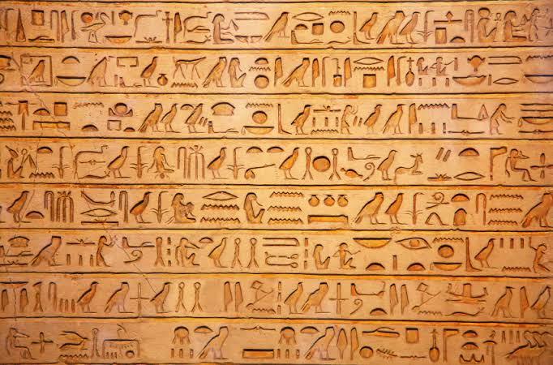
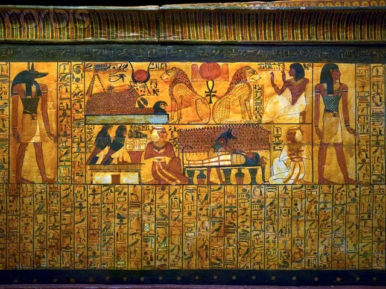
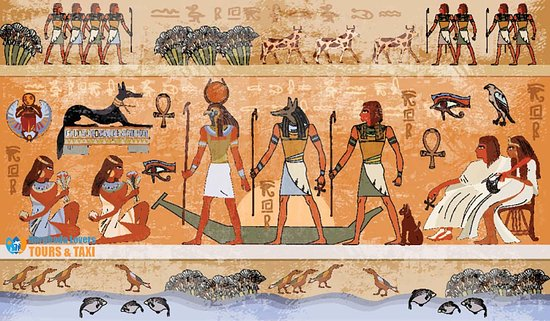
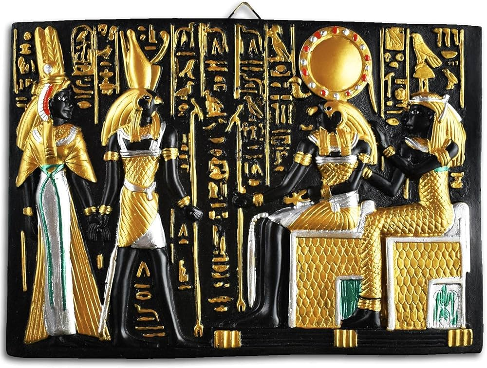
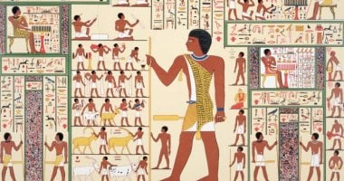

أنواع النقوش
تشمل النقوش الهيروغليفية على الجدران، الأعمدة، والتماثيل، وتوثق الأحداث الملكية، الطقوس الدينية، والقصص الأسطورية.

اللوحات الفنية
اللوحات كانت تزين المقابر والمعابد، تعرض المشاهد اليومية، الطقوس الدينية، ومغامرات الملوك والآلهة، بأسلوب ثابت وهادئ يعكس الكمالية.

النقوش في المعابد والمقابر
المعابد مثل الكرنك والأقصر كانت مليئة بالنقوش التي توثق الملوك، والآلهة، والمناسبات الدينية. المقابر الملكية تحتوي على لوحات تزين جدرانها وتدل على الحياة بعد الموت.

الرموز والدلالات
كل نقش ولون يحمل رمزية محددة: رموز القوة، الخلود، الإلهة، الشمس، والنيل، وكلها جزء من منظومة دينية وفنية متكاملة.

أهم اللوحات المشهورة
مثل لوحات مقبرة الملكة نفرتاري، وتماثيل وتمثيلات الملك توت عنخ آمون، التي توضح براعة الفنان المصري القديم ودقة تفاصيله.